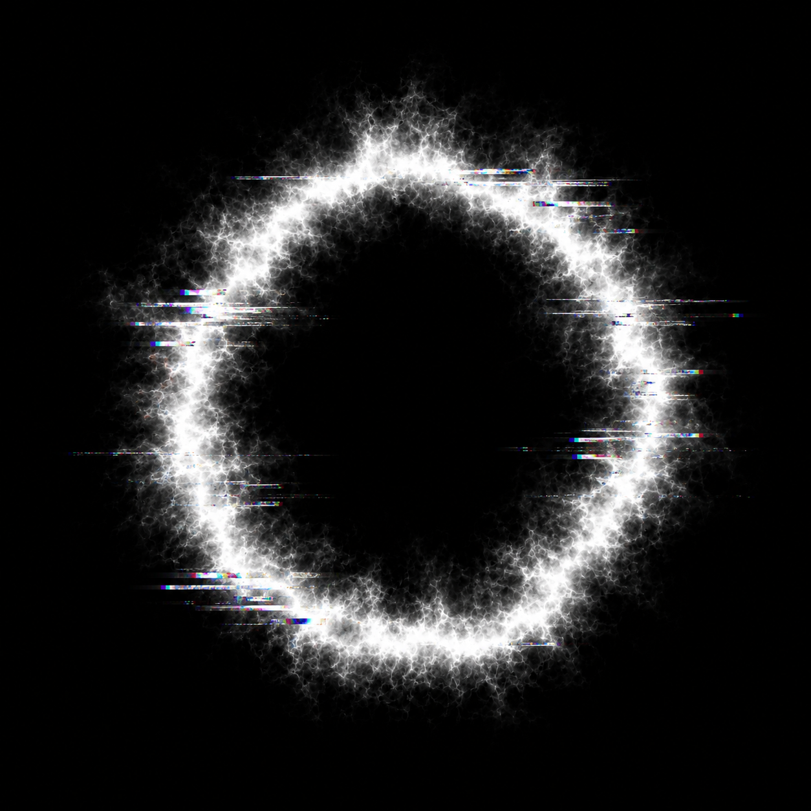

Last updated: May 2026
The Frustrator app is a fully autonomous audio synthesizer. It does not collect, store, track, or share any personal data, device identifiers, or user information.
The app works entirely offline. It does not require or use an internet connection, and it does not transmit any data to third-party services.
The app does not require access to your microphone, location, camera, contacts, or storage.
If you have any questions, contact the developer at: vladimirmastepanov@iMac-de-Vladimir
